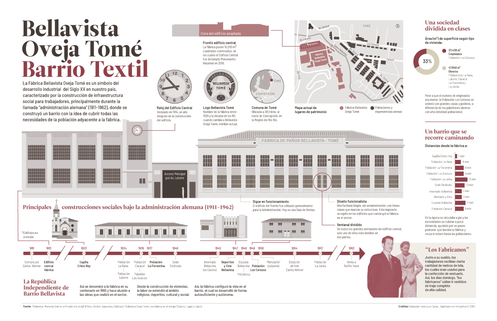

Lo avanzado
Inicié este diplomado el 09 de julio del 2024. Mi experiencia previa con la infografía se resumen en trabajos en Photoshop, Illustrator y After Effects, realizados con motivo laboral (asesoría a sindicatos), de investigación y difusión (centro de estudios de Chiloé) y en otros ámbitos estudiantiles y sociales.
Con lo aprendido y avanzado en el diplomado, he llegado a la infografía que sigue:
Además, he podido explorar otras formas de presentar información, estando, por ejemplo, lo aprendido en el módulo recién pasado y publicado en Instagram.